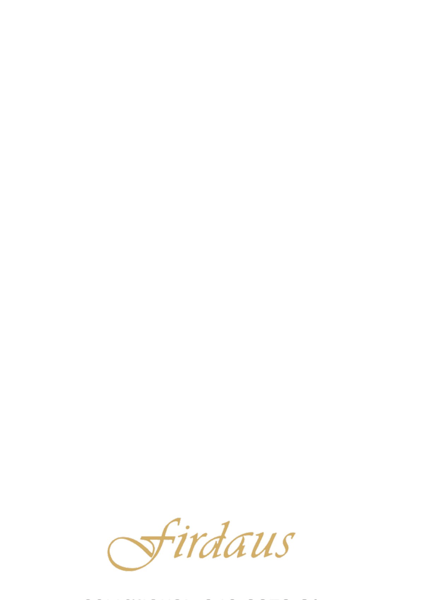
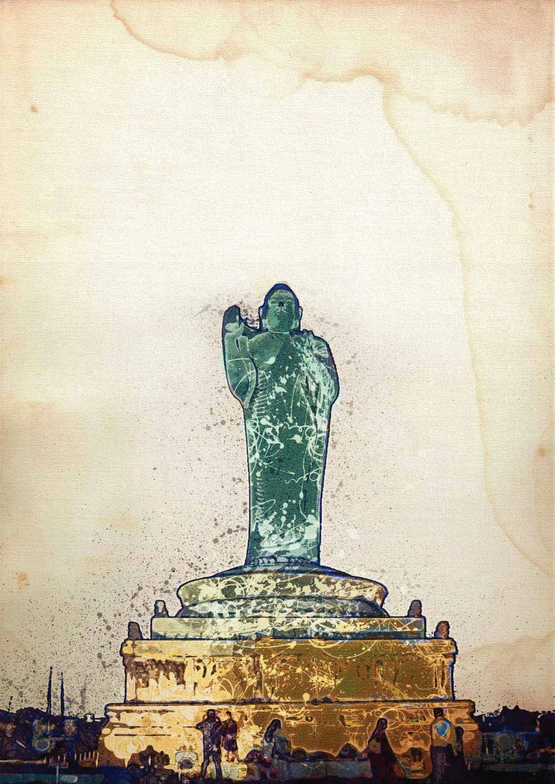
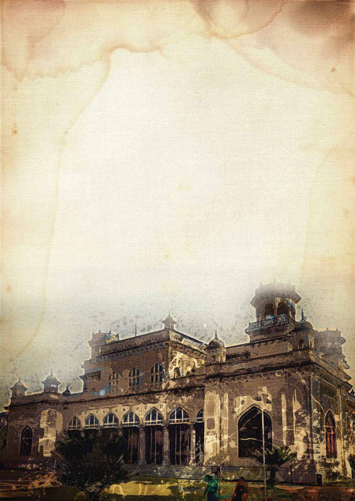
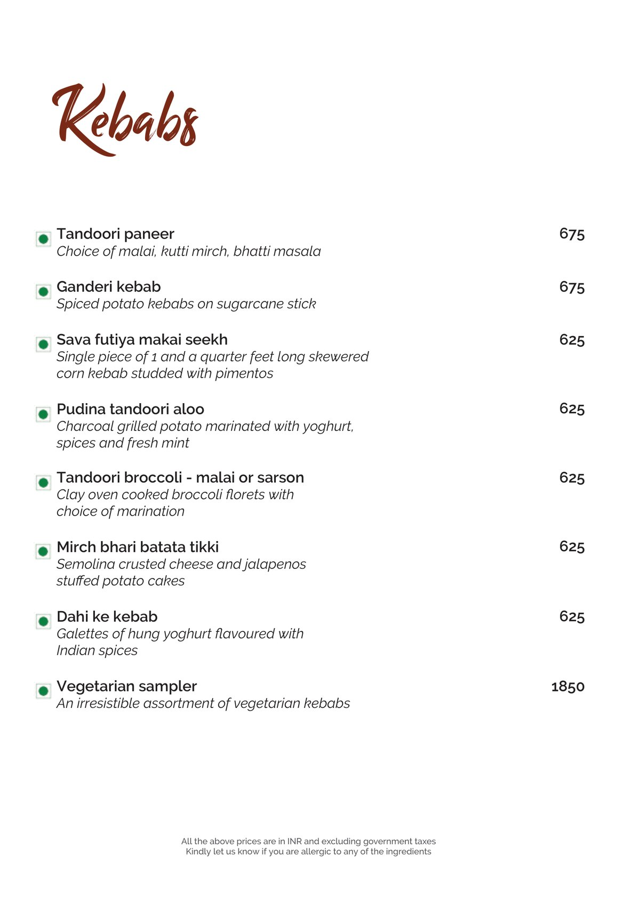
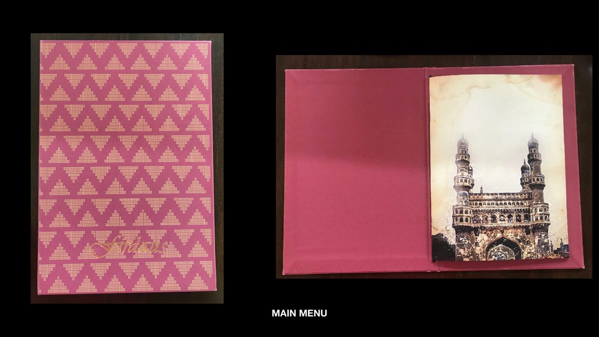
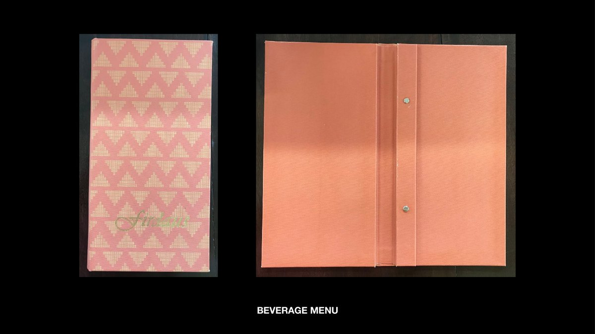
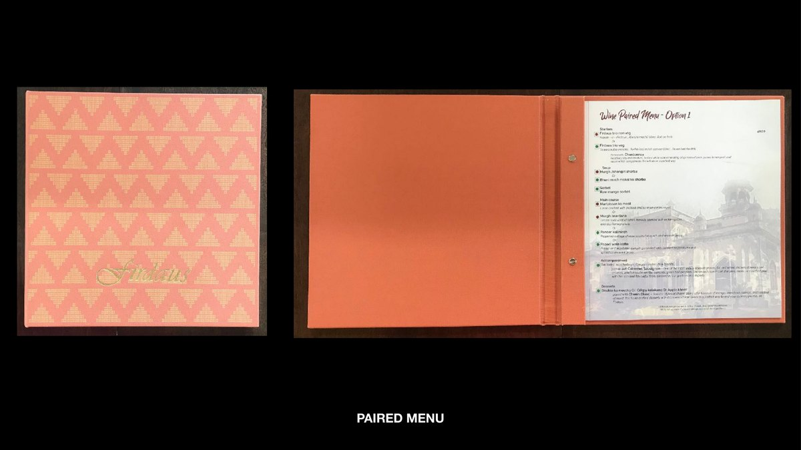

A menu suite for Firdaus, the Awadhi fine-diner at Taj Krishna, Hyderabad — built like a heritage book. Watercolour-washed monuments of the Deccan on aged paper, a gilt script wordmark, and pink-jali bound covers for the printed set.
Firdaus serves Awadhi and Hyderabadi cuisine in a city thick with history, so the menu had a clear job: feel less like a list of dishes and more like a small book about the place. The answer leans entirely on Hyderabad's own monuments and the texture of old paper.
Each menu opens onto a watercolour-washed landmark — the Charminar, the Buddha at Hussain Sagar, the ramparts of Golconda — printed on aged, foxed stock, with a single gilt "Firdaus" script holding the set together.







Age it, and it reads as provenance.
The whole mood rests on the stock. Each spread is treated as a leaf from an old travel album — sepia, foxed at the edges, the monuments rendered in loose watercolour rather than crisp photography. Type stays quiet and classical so the page feels collected rather than designed, and the food reads as part of a longer story about the city.
Off the page, the menus become objects: bound in a pink-and-coral jali pattern, framed and weighty, with the gilt wordmark foiled on the cover. The suite runs across the room's needs — a main menu, a beverage list, an alfresco card and a paired-tasting menu — each unmistakably Firdaus, each opening onto a different view of Hyderabad.